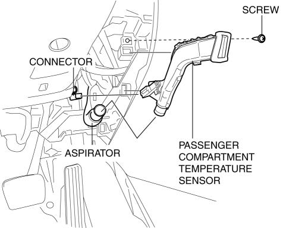
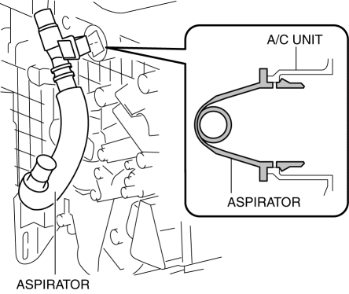

< Previous
Next >
2014 -
Mazda6 -
HVAC
PASSENGER COMPARTMENT TEMPERATURE SENSOR REMOVAL/INSTALLATION [FULL-AUTO AIR CONDITIONER]
1. Disconnect the negative battery cable. (See NEGATIVE BATTERY CABLE DISCONNECTION/CONNECTION [SKYACTIV-G 2.5].)
2. Remove the following parts: a. Upper panel (See UPPER PANEL REMOVAL/INSTALLATION.)
b. Rear console (See REAR CONSOLE REMOVAL/INSTALLATION.)
c. Selector lever knob (ATX) (See AUTOMATIC TRANSAXLE SHIFT MECHANISM REMOVAL/INSTALLATION.)
d. Shift lever knob (MTX) (See MANUAL TRANSAXLE SHIFT MECHANISM REMOVAL/INSTALLATION [C66M-R].)
e. Shift panel (See SHIFT PANEL REMOVAL/INSTALLATION.)
f. Front console box (See FRONT CONSOLE BOX REMOVAL/INSTALLATION.)
g. Side wall (See SIDE WALL REMOVAL/INSTALLATION.)
h. Front console (See FRONT CONSOLE REMOVAL/INSTALLATION.)
i. Front scuff plate (driver-side) (See FRONT SCUFF PLATE REMOVAL/INSTALLATION.)
j. Front side trim (driver-side) (See FRONT SIDE TRIM REMOVAL/INSTALLATION.)
k. Fuel filer lid opener lever (See FUEL-FILLER LID OPENER AND LEVER REMOVAL/INSTALLATION.)
l. Hood release lever (See HOOD LATCH AND RELEASE LEVER REMOVAL/INSTALLATION.)
m. Lower panel (driver-side) (See LOWER PANEL REMOVAL/INSTALLATION.)
3. Remove the aspirator. (See Aspirator Removal Note.)

4. Remove the screw.
5. Disconnect the connector.
6. Remove the passenger compartment temperature sensor.
7. Install in the reverse order of removal.
Aspirator Removal Note
1. Remove the aspirator as shown in the figure.

< Previous
Next >
© 2012 Mazda North American Operations, U.S.A.